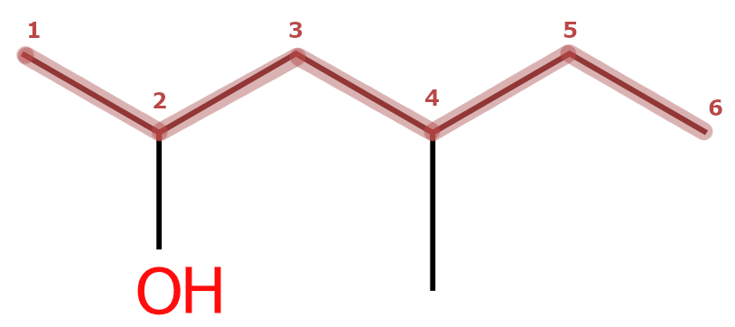
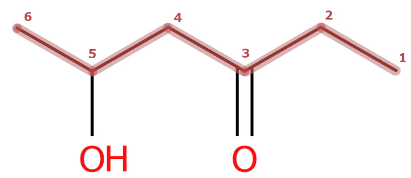
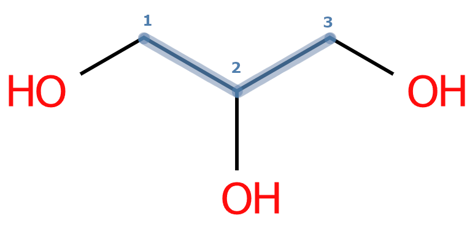
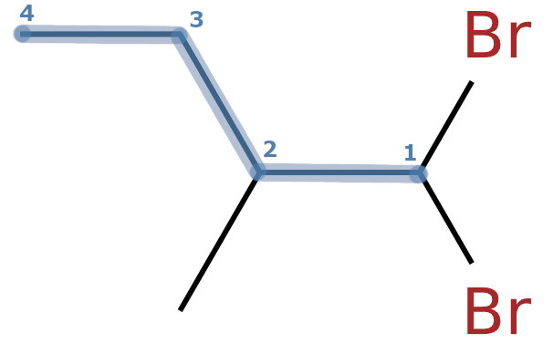
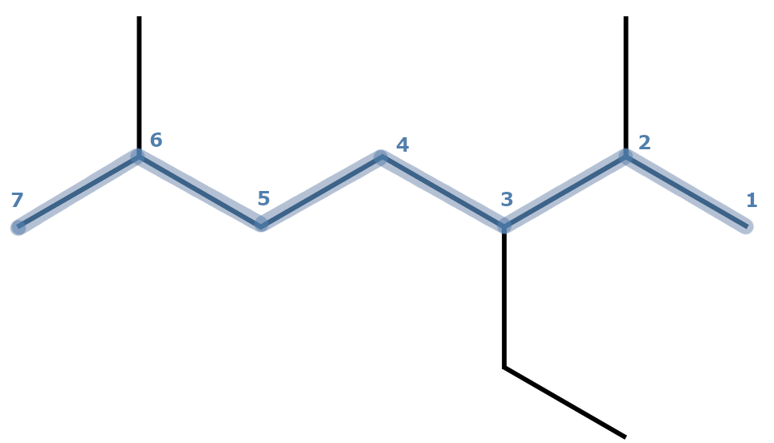
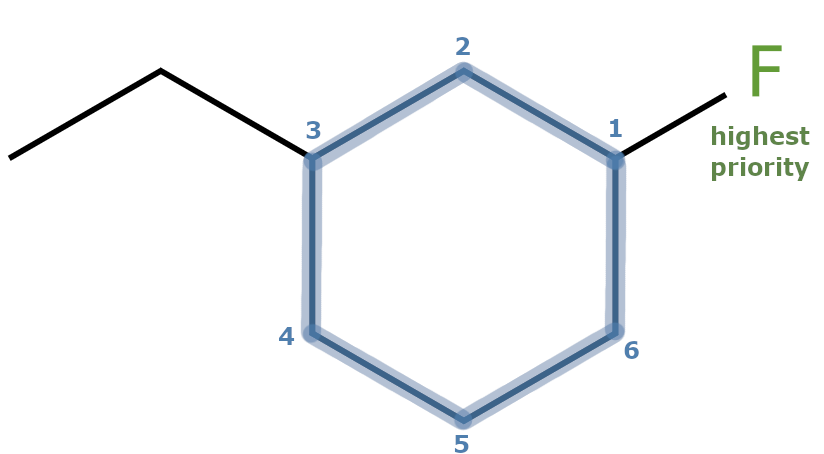
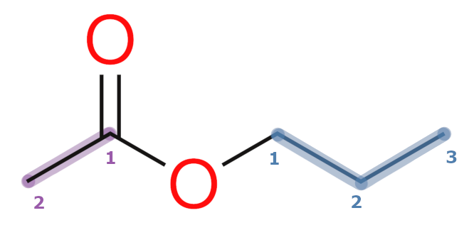
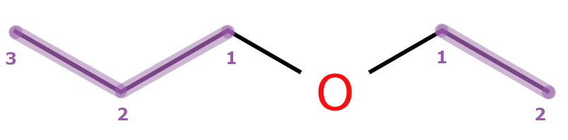

Vi bruker forskjellige navn på forskjellige karbonkjedelengder. -an, -en, -yn og -yl forteller oss hvilken type hydrokarbon det er. Sykliske forbindelser får syklo- som forstavelse.
| Karboner | Alkaner |
|---|---|
| 1 | metan |
| 2 | etan |
| 3 | propan |
| 4 | butan |
| 5 | pentan |
| 6 | heksan |
| 7 | heptan |
| 8 | oktan |
| 9 | nonan |
| 10 | dekan |
En funksjonell gruppe er hva som gir funksjonalitet til forbindelsen. Jo mer funksjonalitet den gir, desto høyere er den prioritert i navnsetting. En forbindelse med både en hydroksy (OH) og karboksy (COOH) gruppe vil for eksempel bli kalt en hydroksy syre siden de fysiske og kjemiske egenskapene syre-gruppa gir er viktigere for molekylet som helhet enn alkohol-gruppa. Den funksjonelle gruppa som er høyest prioritet bestemmer både stoffets etternavn (suffix) og retningen vi teller.
| Prioritet | Stoffgruppe | Funksjonell gruppe | Prefix | Suffix |
|---|---|---|---|---|
| 1 | Karboksylsyre | –COOH | -syre | |
| 2 | Ester * | –COOR | ||
| 3 | Amid | –CONH₂ | -amid | |
| 4 | Aldehyd | –CHO | okso- | -al |
| 5 | Keton | >C=O | okso- | -on |
| 6 | Alkohol | –OH | hydroksy- | -ol |
| 7 | Amin | –NH₂ | amino- | -amin |
| 8 | Alken | C=C | -en | |
| 9 | Alkyn | C≡C | -yn | |
| 10 | Eter * | –O– | ||
| 11 | Halogen | –X | fluor- klor- brom- jod- | |
| 12 | Alkyl | –R | metyl- etyl- propyl- butyl- |
Nummerer hovedkjeden slik at den funksjonelle gruppa av høyest prioritet får det minste mulige tallet. I praksis betyr det at vi teller fra enden den funksjonelle gruppa er nærmest. Alle andre grupper blir sett på som substituenter og vil gi opphav til fornavnet til forbindelsen.


Når man har flere substituenter av samme type, separerer man posisjonstallene med komma. Man må også spesifisere antallet man har av substituenten: di-, tri-, tetra-, ...


Når man har flere forskjellige substituenter, skriver du dem i alfabetisk rekkefølge. Se kun på navnet til substituenten, ikke det graske tallordet foran. Når vi sammenligner "2,4-dimetyl" med "3-etyl" for eksempel, skal man kun se på "metyl" og "etyl".


Estere har sin egen navnsettingsregel. De blir laget gjennom en kondensasjonsreaksjon mellom en alkohol og en karboksylsyre. Alkoholens navn kommer først og får endingen -yl. Karboksylsyras navn kommer etter med endelsen -at. Dette er fordi syrer som har mistet H+ får endingen -at, sånn som nitrat, sulfat og karbonat.

Etere har sin egen navnsettingsregel. Først bestemmer man hvor lang hver karbonkjede som er koblet til oksygenatomet er og rangerer de i alfabetisk rekkefølge. Dersom alkylgruppene er like lange skriver man di- foran. Til slutt putter man "eter" bak. For eksempel: "etylmetyleter" eller "dietyleter".
